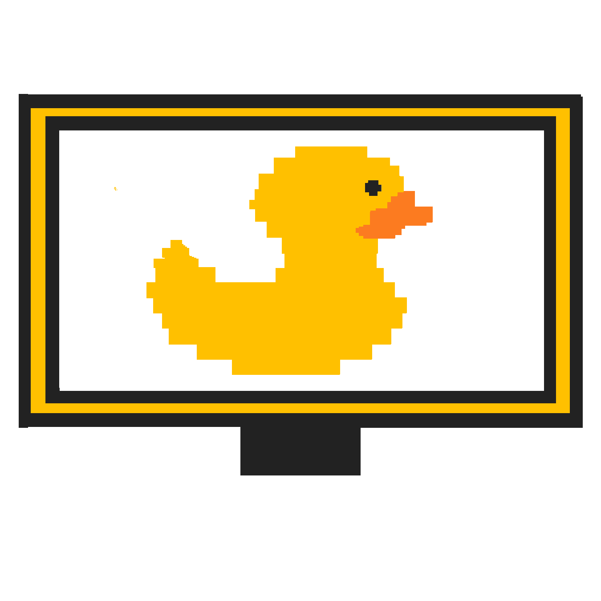
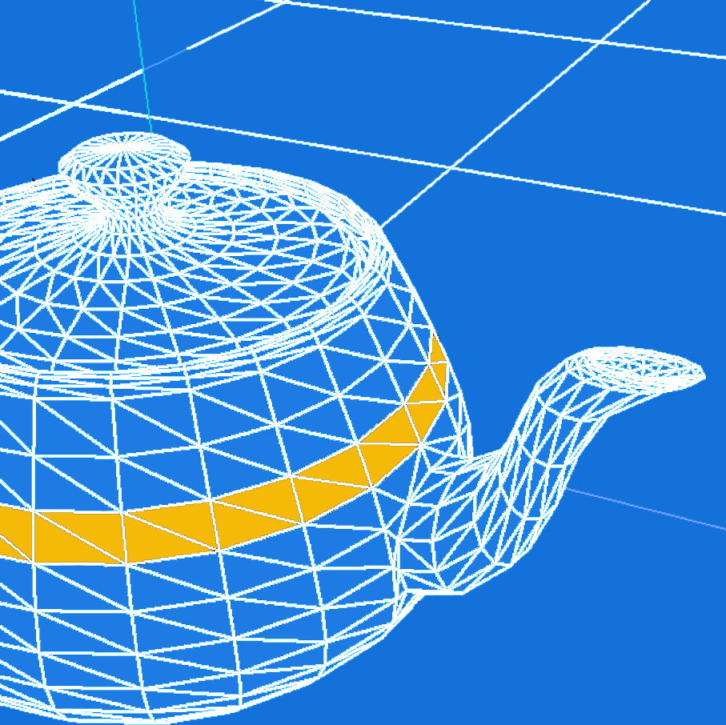
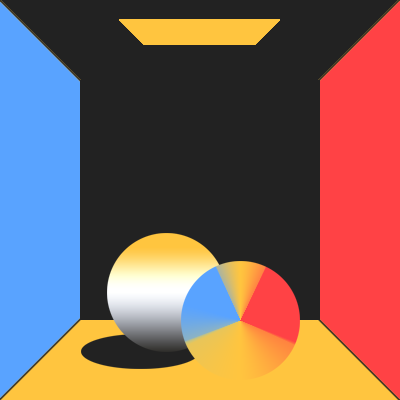

Ricky Herrera


about
Technically, my name is Ricardo, but its whutever. I am currently a student at UC Berkeley studying Computer Science and Film Studies. I have a deep passion for computer graphics and in particular its applications film, VR/AR, and video games.
I am currently in the process of setting up a SIGGRAPH Student Chapter for UC Berkeley.
And in case you're wondering, lighting and rendering are my favorite parts of the pipeline.
projects

Rasterizer
C++ implemented image rasterizer – performs supersampling, hierarchical transforms, and texture mapping with antialiasing on SVG files and converts to 2D image.

MeshEdit
C++ implemented 3D model mesh application; load and edit basic COLLADA mesh files (used by many major modeling packages and real time graphics engines).

PathTracer
C++ implemented, based on Physically Based Rendering (Pharr & Humphries)

E-Minor Engine
OpenGL simulator, supports textures, model loading, gameplay, and lighting.
short films
Only Love (2017)
This project was made for UC Berkeley's Advanced Digital Animation course, CNM190 (Fall 2016 - Spring 2017). In essence, its a short about the pangs of alcoholism, but very layered, revealing new meanings with every view.
I worked on the sound effects, lighting, modeling, and post-production for this short. Specifically, the lighting I am most proud of is during the liquor store scene, as we experiemented with what felt like every possible variation. Since we were going for a Tell-Tale -chiaroscuro- comic book-esque look, directional lights were crucial.
I am really proud of the music I wrote for this, especially when I found my peers humming the music at random times. Only Love has won an award at the East
LA film festival, and is being considered for other film festivals!
Sweet Victory (2016)
My first 3D animated short! My notable contribution to this masterpiece is Marshmallow (or as like my mom refers to it, "El Bombon"), which I modeled and animated. Learning Maya and other software was so rewarding, and this project helped me explore some of their capabilites.
Fun fact: the chocolate fountain was for a time a bifrost simulation with very viscous chocolate. However, the renderfarm hates us and it didn't go as planned. This was made during my first semester of UCBUGG, probably the best class I have taken while at Berkeley.
Walden (2016)
The piece was my group's submission for Cal State Long Beach's 24 Hours Challenge; as the name implies this was made in under
24 hours. The prompt was "make a 1 minute short that contains a physical or metaphorical wall". You learn a lot about your animation partners when trapped in a computer lab for 24 hours. We all left with a new connection with one another; and sleep deprivation.
The Loop (2017)
This short was made for the Campus Movie Festival @ UC Berkeley. I worked on the music, some color grading, and story ideas. (I wrote the music in 30 minutes, while waiting to get medication).
STAY TUNED // MORE TO COME //
I am really proud of the music I wrote for this, especially when I found my peers humming the music at random times. Only Love has won an award at the East
LA film festival, and is being considered for other film festivals!
Sweet Victory (2016)
My first 3D animated short! My notable contribution to this masterpiece is Marshmallow (or as like my mom refers to it, "El Bombon"), which I modeled and animated. Learning Maya and other software was so rewarding, and this project helped me explore some of their capabilites.
Fun fact: the chocolate fountain was for a time a bifrost simulation with very viscous chocolate. However, the renderfarm hates us and it didn't go as planned. This was made during my first semester of UCBUGG, probably the best class I have taken while at Berkeley.
Walden (2016)
The piece was my group's submission for Cal State Long Beach's 24 Hours Challenge; as the name implies this was made in under
24 hours. The prompt was "make a 1 minute short that contains a physical or metaphorical wall". You learn a lot about your animation partners when trapped in a computer lab for 24 hours. We all left with a new connection with one another; and sleep deprivation.
The Loop (2017)
This short was made for the Campus Movie Festival @ UC Berkeley. I worked on the music, some color grading, and story ideas. (I wrote the music in 30 minutes, while waiting to get medication).
STAY TUNED // MORE TO COME //
Fun fact: the chocolate fountain was for a time a bifrost simulation with very viscous chocolate. However, the renderfarm hates us and it didn't go as planned. This was made during my first semester of UCBUGG, probably the best class I have taken while at Berkeley.
Walden (2016)
The piece was my group's submission for Cal State Long Beach's 24 Hours Challenge; as the name implies this was made in under
24 hours. The prompt was "make a 1 minute short that contains a physical or metaphorical wall". You learn a lot about your animation partners when trapped in a computer lab for 24 hours. We all left with a new connection with one another; and sleep deprivation.
The Loop (2017)
This short was made for the Campus Movie Festival @ UC Berkeley. I worked on the music, some color grading, and story ideas. (I wrote the music in 30 minutes, while waiting to get medication).
STAY TUNED // MORE TO COME //
The Loop (2017)
This short was made for the Campus Movie Festival @ UC Berkeley. I worked on the music, some color grading, and story ideas. (I wrote the music in 30 minutes, while waiting to get medication).
STAY TUNED // MORE TO COME //